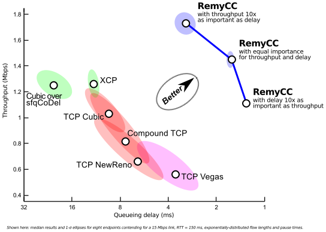
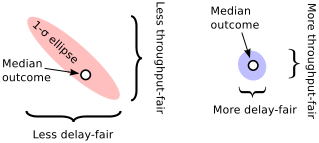
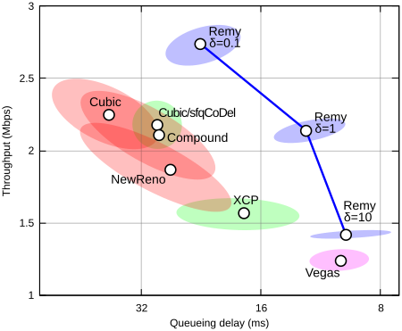
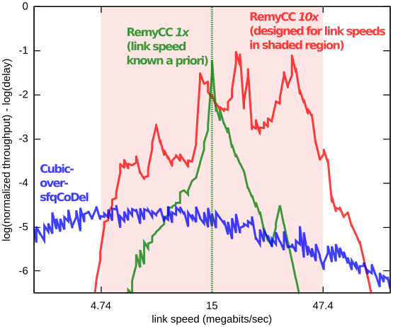

TCP ex Machina: Computer-Generated Congestion Control
by Keith Winstein and Hari Balakrishnan
MIT Computer Science and Artificial Intelligence Laboratory
Remy is a computer program that figures out how computers can best cooperate to share a network.
Remy creates end-to-end congestion-control algorithms that plug into the Transmission Control Protocol (TCP). These computer-generated algorithms can achieve higher performance and greater fairness than the most sophisticated human-designed schemes.

Read the Paper Reproduce the Results Get the Code
Research Paper
Remy will be presented at the ACM SIGCOMM 2013 annual conference in Hong Kong.
 TCP ex Machina: Computer-Generated Congestion Control
TCP ex Machina: Computer-Generated Congestion Control
This is the authors' version of the work. The definitive version will be published in the proceedings of ACM SIGCOMM 2013.
Frequently Asked Questions
What is congestion control?
On the Internet, most of the intelligence lies in the endpoint computers, not inside the network. One of the endpoints' responsibilities is to fairly share the network's limited resources among themselves.
For example, in a house with a 10 Mbps connection to the Internet, with two users trying to upload a video to YouTube at the same time, it's usually the users' computers that decide how the 10 Mbps will be split. Does one get 9 Mbps and the other 1 Mbps? Do they split the capacity evenly? Does the one with the shorter video get to go first? By sending too aggressively, do these uploads force real-time conversations (e.g. a Skype call) to suffer large delays?
These questions are the province of TCP congestion control: an algorithm contained in every computer on the Internet, governing how it shares the network with other computers. TCP's implementations are arguably the most widely-used computer programs in the world. It runs the World Wide Web and services like Netflix and YouTube.
What makes Remy different?
Up to this point, human designers have created TCP's congestion-control algorithms by hand. There have been many such schemes over the last 25 years: TCP Tahoe, Reno, NewReno, Vegas, FAST, BIC, Cubic (Linux's current default), Compound (Windows's current default), etc. As the Internet has matured and evolved, crossing oceans and including wireless networks and ultrafast datacenters, so too have protocol designers added bells and whistles to our congestion-control algorithms.
But while it is easy to lay out the rules that govern a single endpoint running TCP Cubic, the emergent behavior of a flock of machines running Cubic is complicated and difficult to characterize. It can even be unstable. Congestion-control schemes each embody implicit assumptions and preconceptions about the network, but we don't quite know what they are. And the teleology of TCP — the end goal that these algorithms try to achieve — is unknown in general, when connections start and stop over time.
We propose to flip this around. With Remy, human protocol designers specify explicitly their prior knowledge and assumptions about the network and a goal to strive for. Remy then creates an algorithm to run at the endpoints — possibly a complex one, but with simple emergent behavior: achieving the goal as best as possible on networks described by the stated assumptions.
How well do Remy's computer-generated algorithms work?
We tested Remy's computer-generated algorithms both on networks within the range for which they were designed (networks consistent with the prior assumptions) and on networks outside that range.
In the former case, the best computer-designed algorithms outperformed all our human-designed schemes to date — not only other end-to-end schemes, but also algorithms that depend on code running inside the network, such as XCP and sfqCoDel.
For example, with eight senders sharing a 15 Mbps link, a Remy-generated algorithm achieved more than twice the median throughput, with less than half the queueing delay, of Compound TCP and TCP NewReno. It achieved 70% more throughput than TCP Cubic and more than a threefold reduction in queueing delay.
Performance varied with how specific the prior knowledge was. In general, the more specific the prior knowledge the better, as long as it is correct. But on networks that didn't meet the given assumptions, performance of Remy's algorithms deteriorated the further the network was from what Remy had been told to expect. A full discussion of these results is available in the research paper.
How does this help the Internet?
It's a little too soon to tell. Our research paper measured the performance of Remy's algorithms in simulation, using the popular ns-2 simulator. If the gains seen in these simulations hold when tested on a real network, the results would mean faster downloads, shorter end-to-end delay in real-time videoconferencing, and a more equitable sharing of limited network resources.
We are far from the first to propose a way to improve TCP. But our work points toward a way for the Internet to evolve more easily, by making assumptions explicit and automating the process of protocol design. Right now, the designers of network infrastructure (especially Wi-Fi, LTE, and satellite connections) are constrained by the need to make TCP perform well. As a result, these networks try to retransmit lost packets, and they keep packets delivered in order, and they avoid spreading packets from the same flow on multiple different routes. Other, more natural behaviors would be more reliable (multipath routing) or faster (allowing out-of-order delivery) or cause lower delays (don't retransmit), but today's TCP — part of the endpoint operating systems — would respond poorly. Tweaking TCP by hand to accommodate the natural behavior of a new network is a difficult exercise.
We think TCP should adapt to whatever the lower layers feel like doing. If the behavior of the network changes radically, a protocol designer could tweak the assumptions fed into Remy, and end up with a new and newly-appropriate TCP congestion-control scheme automatically. In our view, this flexibility would free up the network infrastructure to explore new behaviors. Multipath routing, out-of-order delivery, and exposing stochastic loss may be good things!
How does this relate to “bufferbloat”?
It's now a well-known problem that some kinds of gateways (often cable modems and cellular connections) are so reluctant to drop packets that they will hold on to tens of megabytes in their buffers. Today's TCP fills up the buffers in the bottleneck gateway, causing huge delays for other packets traveling on the same path. This makes it hard to have a Skype call and a big upload at the same time over a cable modem—the upload can cause the Skype call to see delays of 2 seconds or more.
Some researchers have argued eloquently that network operators and implementers should modify the infrastructure to have shorter buffers or intelligent queue-management schemes, such as the recent CoDel and separate queues for different flows. But modifying every place there is too much buffering — every LTE base station, every LTE baseband chip inside a cell phone, and every cable modem — may be an uphill battle.
Our work demonstrates that in some cases, comparable or higher performance is possible without modifying network infrastructure at all—just by modifying the contending endpoints. Which route is easier depends on where you sit, and to be clear, CoDel is an actual scheme that is implemented in Linux, whereas Remy is academic research measured in simulation, so it would be premature to claim real-world parity. But Remy suggests there is an alternative, possibly more deployable, solution to the same problem.
Isn't TCP basically good enough?
In practice, the answer appears to be no. First, the consensus around what TCP should assume and should aim for has frayed. Datacenters turn off slow start or run datacenter TCP or more exotic schemes. Satellite operators split the TCP connection and run their own protocol on the satellite link. Movie studios avoid TCP when sending large files of movie footage from Europe back to Hollywood, because TCP underutilizes high-delay links. Companies like Aspera make UDP file transfer applications for these kinds of customers. Bittorrent became unhappy with TCP because it filled up network buffers and angered users and network operators; they now prefer LEDBAT-over-UDP (μTP). Google is experimenting with sending Web traffic over UDP and has implemented this in Chromium. Our own Mosh application uses a UDP-based protocol that synchronizes state over challenged networks, because TCP can't handle frequent packet loss or intermittent connectivity.
Second, TCP's fragility is constraining the lower layers. Networks mask stochastic losses, and avoid out-of-order delivery or multipath routing, because TCP reacts poorly to packet loss and out-of-order delivery. It would be preferable to make TCP's assumptions explicit and allow lower layers to innovate as they see fit, with the confidence that the transport layer can evolve as necessary.
Finally, even applications that do use TCP often don't “really” use TCP in the traditional sense. A Web browser may open 120 TCP connections just to load one Web page! Applications like Netflix build their own rate control on top of TCP, based on TCP's performance in downloading four-second chunks of coded video. This leads to well-documented perverse results.
It's not an original observation to point out that these applications have all defected from the idea of a one-size-fits-all TCP to enforce fairness on the Internet. But we think our contribution is to show it's possible that these disparate schemes can all be united under a common framework, where protocol designers specify what they want out of the protocol—what the network will look like, what the goal is—and the protocols become a function of that.
How do I interpret the performance plots?
We summarize the behavior of congestion-control schemes on a throughput-delay plot. For a given network and traffic model, we run many simulations of each scheme. We calculate the median throughput and queueing delay in each run, as well as the 1-σ ellipses showing the variability (unfairness) of outcome per sender.

On the plot, throughput is shown on the y-axis, and better throughputs are found as the graph gets higher. Delay is shown on the flipped x-axis: better delays are found as the graph moves to the right. The best schemes are in the upper-right-hand corner. The efficient frontier — the best available tradeoffs between throughput and delay — is shown in blue:

Example throughput-delay plot of each scheme running over a trace of the Verizon LTE downlink, four flows contending (Fig. 7 of paper)
Results of several more simulations are available in the research paper.
What does Remy do?
Remy is run as an offline optimization tool to create a new congestion-control scheme. As input, it takes:
- the protocol designer's prior knowledge or assumptions about the network. Is the wire speed known in advance, or is it subject to uncertainty? (Some protocols, such as XCP or pFabric, want to know the wire speed exactly.) What are the range of round-trip times the protocol may encounter? These assumptions are encoded into a network model.
- a traffic model expressing the needs of the users on the network, as a stochastic model expressing when flows start and stop.
- an objective function for what the protocol should aim to maximize. The sum of the log of each user's throughput? Throughput divided by delay ? Flow completion time?
Remy typically runs for several hours and produces a congestion-control algorithm that can be implanted into the sender of a TCP implementation, and then run in real-time. Right now, we do not need to modify the TCP receiver.
How can Remy create an algorithm automatically? Isn't this just a sophisticated parameter sweep technique?
A fully-general solution to the congestion-control problem would have to map every possible input (the sequence of acknowledgments and when they arrived) and past actions taken (when every outgoing packet was sent) to a decision about when to send the next packet. The general version of this problem is known as a Decentralized Partially-Observable Markov Decision Process, and such a search would probably be NEXP-complete—beyond computationally infeasible!
To approximate the solution tractably, Remy cuts back on the state that the algorithm has to keep track of. Instead of the full history of all acknowledgments received and outgoing packets sent, a Remy-designed congestion-control algorithm (RemyCC) tracks three state variables:
- a moving average of the inter-arrival time of acknowledgments from the receiver
- a moving average of the sender's outgoing timestamp echoed in those acknowledgments
- the ratio between the most recent round-trip-time measurement and the minimum observed so far on this connection
The RemyCC maps regions of this state space to an action:
- a multiplier to the current congestion window
- an increment to the congestion window
- a minimum interval between outgoing packets (for pacing)
To find the best mapping, Remy start with the entire state space mapped to just one action. It simulates the performance of the RemyCC on networks randomly-drawn from the network model, and measures the value of the objective. It explores different actions and searches for the best one overall. We call this a rule: a mapping of a region of the state space (in this case the entire space) to one action.
After it has converged on the best single action, Remy splits the rule at the median query in each dimension. That is, it creates eight new rules, so that each one is used roughly 1/8 of the time. We repeat the optimization, finding the best action for each of these eight rectangular regions of the state space. When that has converged, Remy splits the most popular rule and repeats the process.
The result is that rules that are used more often receive correspondingly more attention from the optimizer. Knowing which rules those will be requires simulating the network with every node running the same rules. So Remy mixes structural optimizations (splitting the existing rules) with improvements to existing rules, and alternates between them.
Formally, Remy's optimization is non-parametric (so it's not “just” a parameter sweep technique), because the number of parameters is unbounded and continues growing as rules are split. But Remy is not so general as to find any algorithm that might be best—we restrict the RemyCC to only consider the three state variables. This reduces the search space dramatically.
How did you pick these congestion signals?
We experimented with various signals in Remy and settled on this set after examining and discarding quantities like the most-recent RTT sample, the smoothed RTT estimate, and the difference between the long-term moving average and short-term average of the observed packet rate or RTT. In our experiments, adding extra state variables didn’t improve the performance of the resulting protocol, and each additional dimension slows down the design procedure considerably. But we don’t claim that Remy’s three state variables are the only set that works, or that they are necessarily optimal for all situations a protocol might encounter. We expect that any group of estimates that roughly summarizes the recent history could form the basis of a workable congestion-control scheme.
Arguably the real contribution is that we now have an empirical framework where the benefit of novel congestion signals can be measured and quantified under controlled conditions.
Why do the computer-generated algorithms get these results?
We don't know for sure. Remy's algorithms have more than 150 rules, and will need to be reverse-engineered to figure out how and why they work. We suspect that there is considerable benefit to being able to combine window-based congestion control with pacing where appropriate, but we'll have to trace through these things as they execute to really understand why they work.
Arguably, this is a side effect of the way that Remy shifts the complexity of the problem. Traditional TCP has relatively simple rules for endpoints to follow, but complex emergent behavior, implicit preconceptions about the network and an unknown goal. RemyCCs have very complex rules for endpoints to follow, but consistent emergent behavior and explicit assumptions and objective.
How is it possible that end-to-end algorithms can outperform in-network schemes like XCP and sfqCoDel? This seems surprising, especially as XCP gets to know the wire speed exactly, while RemyCCs have to just guess at it. Not to mention that in-network schemes are inherently more powerful than end-to-end ones.
We agree it's a surprising result— we're working on a clear explanation for this.
Are you overfitting?
Probably not. Remy was tested on synthetic, stochastic networks in simulation. We can always run the random simulation another million times to see how Remy does vs. TCP Reno, TCP Cubic, etc. This isn't like a machine learning task where we collected a limited corpus of real data and then we're trying to make statements about our ability to perform on future data, yet-to-be-collected.
But there is a closely-related question, which is to ask: how much does Remy depend on the way the simulator works? Would it work at all on a real network? The only way to answer this with confidence is to try it on a real network, which we haven't done yet.
How does the quality of the congestion-control algorithm depend on the prior assumptions?
The more specific the prior knowledge, the better—as long as the prior knowledge is accurate. Here we show the performance of two Remy-designed congestion-control algorithms, or RemyCCs. One (shown in green) was designed for a network of exactly 15 Mbps. The RemyCC in red was designed for a network drawn randomly between 4.7 Mbps and 47 Mbps. Cubic-over-sfqCoDel (an in-network scheme) is shown for comparison:

Around a very narrow range centered on 15 Mbps, the green algorithm performs the best. But as its assumptions stop holding, its performance rapidly deteriorates. The red scheme works over a 10x range, but it too deteriorates as its assumptions are violated.
TCP suffers a similar fate when its (implicit) assumptions are violated. For example, TCP assumes that even when network buffers are full enough to be dropping packets, delays are still acceptable to real-time cross traffic. That may have been true in 1989, but it's not true today—making it hard to run a TCP upload and a Skype call at the same time.
Do you plan any future work?
Absolutely. We'd like to figure out why the RemyCCs work so well, by tracing through them as they execute and reverse-engineering them. We'd like to implement Remy on a real network and test it out. And we'd like to work to find the limits of Remy — can we successfully optimize a RemyCC over a 10,000x range of throughputs and delays? What are the obstacles to making that work? Are there other congestion signals that a RemyCC should consider? We welcome collaborators interested in working on this with us.
Who helped with Remy?
We are grateful to Anirudh Sivaraman for several contributions to the simulator and for helpful discussions. We thank Leslie Kaelbling, Christopher Amato, Scott Shenker, and our shepherd, Ranjita Bhagwan. We thank Frans Kaashoek and Nickolai Zeldovich for the use of multicore machines at MIT, and Damon Wischik for stimulating conversation. KW was supported by the Claude E. Shannon Research Assistantship. We thank the members of the MIT Center for Wireless Networks and Mobile Computing (Wireless@MIT), including Amazon.com, Cisco, Google, Intel, Mediatek, Microsoft, ST Microelectronics, and Telefonica, for their support. This work was also supported in part by NSF grant CNS-1040072.
Contact
This work is by Keith Winstein and Hari Balakrishnan. You can e-mail us at remy at mit dot edu